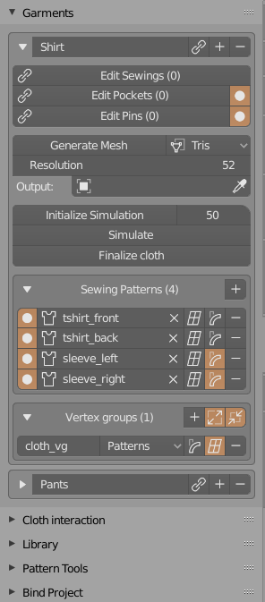
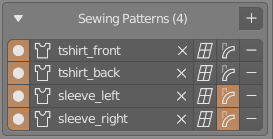
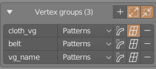

Garment Panel#

Simulate#
Same as Bake option, located in object Physics Tab (but without support for ESC-key cancel)
Save to shape key#
Saves the simulation result from current animation frame, to object shape key. You can save multiple shape keys, but they will be erased if you change geometry by using 'Convert To Mesh'
Convert To Mesh#
Converts current garment patterns, sewings, buttons, pockets to 3d mesh that can be simulated. It will create vertex groups corresponding to each sewing pattern. If you enabled use of Bend Modifier, of Lattice Modifier they will be added to output mesh at this step. The generated mesh will be added to collection named: 'Generated_'+garment_name eg. 'Generated_T_shirt' collection. The mesh itself will be named by garment Name property - located at top of each garment panel. Density of generated mesh triangulation is described by the 'Resolution' parameter located next to it.
Note - If icon on this button changes to cross, then something went wrong during last conversion. Try changing triangluaton method to Slow-HQ (also increasing resolution may help)
Initialize Simulation#
Helper button that makes the value of gravity increase slowly over time. This prevents falling of generated cloth on the floor too fast, before it wraps around the character. Same operation is applied to 'Max Sewing force' and 'Max Shrinking' parameters. It helps to achieve better simulation result, preventing cloth moving to fast. The speed at which those parameters will increase/decrease is described by 'Sim Time' parameter. Lowering sim time, gives faster change in animated values.
Sewing Patterns#

List of objects, that have to be 2D bezier curves. They won't be connected unless user defines at least one sewing between them. Options for Sewing Patterns:
- add / remove
- add bend, lattice modifier
- edit sewings connected to given sewing pattern.
- remove sewings connected to given sewing pattern.
Sewings#
Each sewing contains information about sewing patterns, and segments on each of them that will be merged together by sewing. You can connect two segments in one sewing pattern (used often on sleeves, belts). Both objects, connected by sewing, have to be added in Sewing Patterns list (it happens automatically when you edit sewings). Options for Sewings:
- Source / Target pattern that sewing is connecting and its segment IDs
- flip sewing direction checbox
- buttons for adding / removing / editing sewings.
Vertex Groups#
List of additional vertex groups that can be added on simulated mesh. This gives user ability to assign vertex groups to multiple sewing patterns. For example you can create one vertex group that will include all stiffer sewing patterns, or vertex group that will be then deformed by lattice/bend modifier.. Options for Generated vertex groups: 
- create/remove vertex group
- vertex group name
- list of sewing patterns that will use given vertex group
- add bend, lattice modifier to given vertex group
- option to generated border vertex group (and inverted border vertex group)
Garment Pockets#
List of garment pocket meshes.
Those option gives you ability to project one sewing pattern on surface of target pattern. For it to work it is best to enable cloth self collision if Physics panel. Target object - has to be member of Garment Sewing patterns list.
Options/Properties of Pockets:

- Add / Remove / Edit / Disable - pockets
- Pocket Obj - object that will be projected on surface of another one.
- Target - sewing projection target
- Pocket Sewings - list of indices from Pocket Obj segments, that will be connected to target.
Pins#
This option is useful for pining together two points from same or two different sewings patterns.
Target and Source objects - has to be member of Garment Sewing patterns list..
Options/Properties of Pins:

- Add / Remove / Edit / Disable - pins
- Pin Source and Target pattern
- Pin source and target point location on surface (those points will be stitched together)